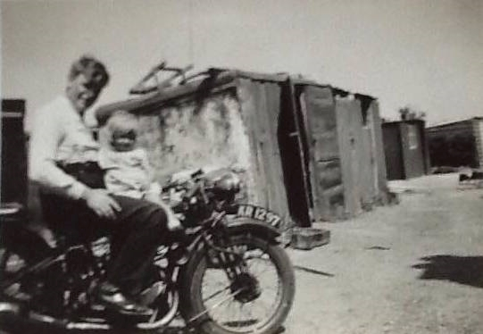
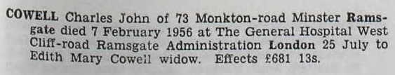
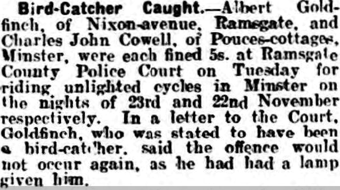
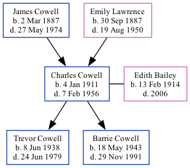

Charles John Cowell 1911 - 1956
[ Home ] | [ Calendar ] | [ Surnames Index ] | [ Family History ]A truck driver and the son of James Cowell (a seaman collier with the whitstable shipping company) and Emily LawrenceCharles Cowell, the uncle of Nigel Horne, was born in St Lawrence, Thanet, Kent, England on Jan 4, 19111,2,3,4,5, was baptized in Ramsgate, Kent, England on Feb 5, 1911 and married Edith Bailey (with whom he had 2 children: Trevor John and Barrie Ernest) at St Mary the Virgin's Church, Minster, Thanet, Kent, England around May 19367 (Apr/May/Jun).
Charles spent all of his life in Kent, England. Throughout his life, he lived in several places around the county: at 13 Ashburnham Road, St Lawrence in Thanet on Apr 2, 19119; at 7 Pouces Cottages, Minster in Thanet on Jun 19, 19212; at Pouces Cottages, Minster in Thanet on Dec 10, 1927; at Sunnymeade, Monkton Road, Minster in Thanet on Sep 29, 19393; and at 73 Monkton Road, Minster in Thanet in 19558 and in 1956.
He died on Feb 7, 1956 at Ramsgate General Hospital, West Cliff Road in Ramsgate4,6 (value of estate £681:13:0. Cancer of the bone marrow).
Parents
- James Frederick was born on Mar 2, 1887
- Emily Jane was born on Sep 30, 1887
Children
- Trevor John was born on Jun 8, 1938
- Barrie Ernest was born on May 18, 1943
Citations
- 1911 England Census Online publication - Provo, UT, USA: Ancestry.com Operations, Inc., 2011.Original data - Census Returns of England and Wales, 1911. Kew, Surrey, England: The National Archives of the UK (TNA), 1911. Data imaged from the National Archives, London, England.
- 1921 Census Of England & Wales - Findmypast (was age 10 and the son of the head of the household)
- 1939 Register - Findmypast (was the head of the household)
- England & Wales, Death Index: 1984-2005 Online publication - Provo, UT, USA: The Generations Network, Inc., 2007.Original data - General Register Office. England and Wales Civil Registration Indexes. London, England: General Register Office. © Crown copyright. Published by permission of the Cont
- England & Wales, FreeBMD Birth Index, 1837-1915 Online publication - Provo, UT, USA: The Generations Network, Inc., 2006.Original data - General Register Office. England and Wales Civil Registration Indexes. London, England: General Register Office. © Crown copyright. Published by permission of the Cont
- England & Wales, National Probate Calendar (Index of Wills and Administrations),1861-1941 Online publication - Provo, UT, USA: Ancestry.com Operations Inc, 2010.Original data - Principal Probate Registry. Calendar of the Grants of Probate and Letters of Administration made in the Probate Registries of the High Court of Justice in England. Londo
- England & Wales, Marriage Index: 1916-2005 Online publication - Provo, UT, USA: The Generations Network, Inc., 2009.Original data - General Register Office. England and Wales Civil Registration Indexes. London, England: General Register Office. © Crown copyright. Published by permission of the Cont
- 1955 Kelly's Thanet Directory
- 1911 Census for England & Wales - Findmypast (was age 0 and the son of the head of the household)
Media
Charles and Joyce Cowell

1911 UK Census page 1

1911 UK Census page 2

Charles John Cowell - probate

Thanet Advertiser 10-12-1927

Thanet Advertiser - 6 Jun 1936

1955 Kelly's Thanet Directory

1911 England, Wales & Scotland Census Transcription - GBC-1911-RG14-04528-0357-1
Canterbury Baptisms - GBPRS/CANT/B/96524838
England & Wales births 1837-2006 - BMD/B/1911/1/AZ/000305/139
England & Wales deaths 1837-2007 - BMD/D/1956/1/AZ/000274/058
1911 England, Wales & Scotland Census Transcription - GBC-1911-RG14-04528-0357-5
1939 Register Transcription - TNA-R39-1820-1820E-019-32
1939 Register Transcription - TNA-R39-1820-1820E-019-31
England & Wales marriages 1837-2008 - BMD/M/1936/2/AZ/000300/035
1939 Register Image - TNA-R39-1820-1820E-019
1921 Census of England & Wales - GBC/1921/RG15/04430/0279/05
Family Tree
Generated by ged2site. Last updated on Nov 13, 2024